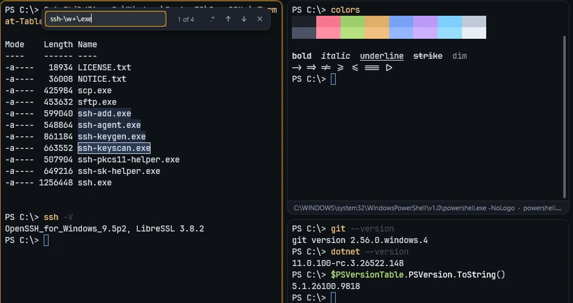
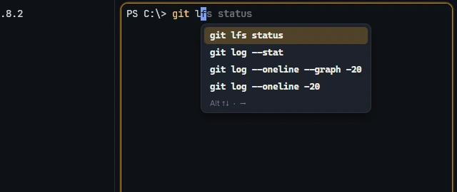

Terminal
A terminal that keeps up with you, and remembers where you were.
- Tabs, nested split panes, and tabs you can drag out into their own window without dropping the connection.
- More than 200 colour themes built in; the terminal can switch between two of them as the system goes light or dark.
- Search through everything a terminal has printed, history included, as plain text or as a regular expression.
- Suggestions while you type: commands you ran before on that server appear dimmed after the cursor, and the right arrow takes them.
- Pictures in the terminal: programs that speak the Kitty graphics protocol show images, plots and animations right in the output.
- Take a picture of a terminal, or save a pane's output to a file.
- A command palette, and keyboard shortcuts you can change from inside the app.

